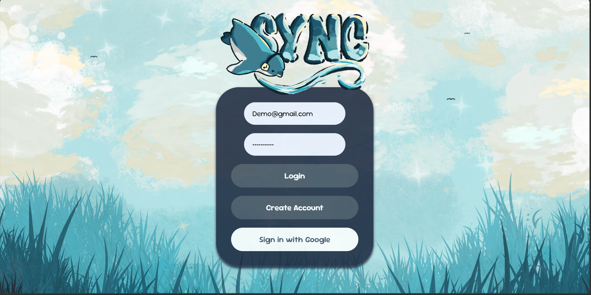
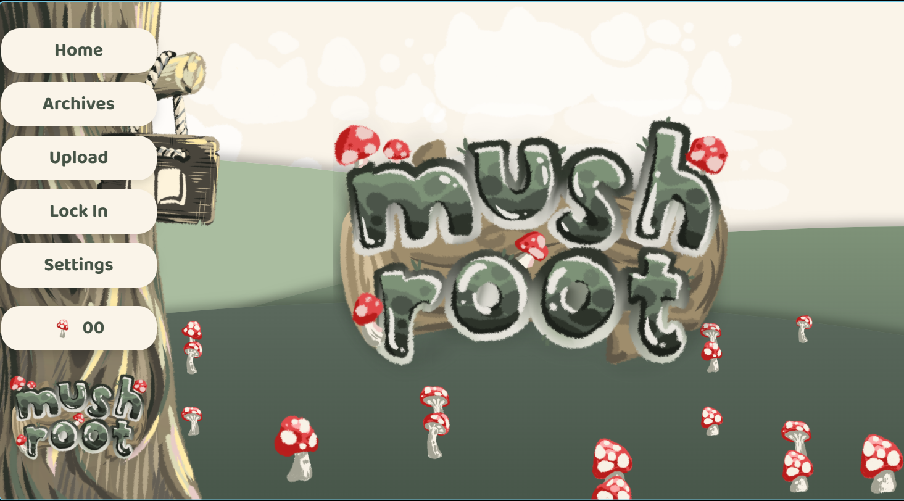
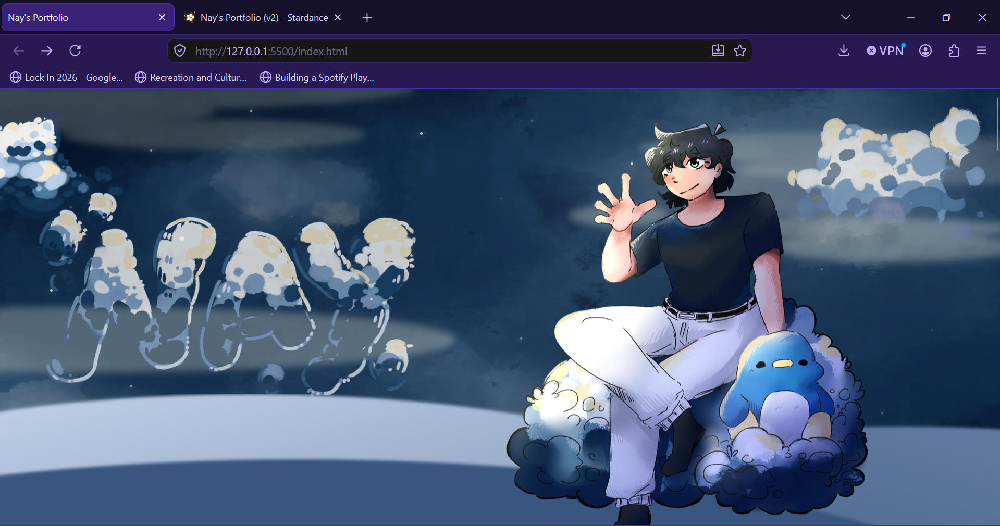

Tech Portfolio
Howl's Moving Castle
Functional Miniature Walking House - Sept 2025 - Jan 2026- Designed and Prototyped a functional miniature walking house based on Howl's Moving Castle by Studio Ghibli
- Result: A clean walk cycle, 3 degrees of freedom in each leg, powered through 5V power bank.
- Tools and Components Used: Fusion Autodesk, PCA9685 Driver, Arduino R4 Wi-Fi, MG90S
- Doccumentation
- Repository

Sync
A Running App that syncs your music with your pace - April 2026 - June 2026- Developed a React Web App for syncing music with running pace, used Firebase as a Back end as a service.
- Result: Full Web App with User Authentication, Dynamic Route and Distance Tracking, Music Controls, and Database Storage.
- Tools: HTML, CSS, TypeScript, React, Firebase, Figma, Procreate, Google Maps API, Spotify API
- Website
- Repository

Mushroot
A Site for uploading and downloading past tests - April 2026 - May 2026- Led an 8-person team to develop a past-test database site for our high school with features designed to support those with ADHD.
- Result: Functional Site to upload and download PDFs from database smoothly, with a search engine to find different past tests through tags.
- Tools: HTML, CSS, TypeScript, React, Figma, Procreate, MySQL, Spring Boot
- Repository

Bear
Bestest Ever Animal Robot - June 2026- A version 2 over Howls Moving Castle, as seen above, but built in a singe day, rather than in months.
- Light weight, removable power bank, 2 degrees of freedom in each leg.
- Tools and Components Used: PCA9685 Driver, Arduino R4 Wi-Fi, MG90S

Personal Portfolio
A Personal Website all about me! - June 2026 - Present- Designed and developed a personal site, including custom graphics, smooth GSAP and CSS animations, and interactive features.
- Hosted with Cloud Flare
- Tools Used: HTML, CSS, JS, GSAP
- Repository
